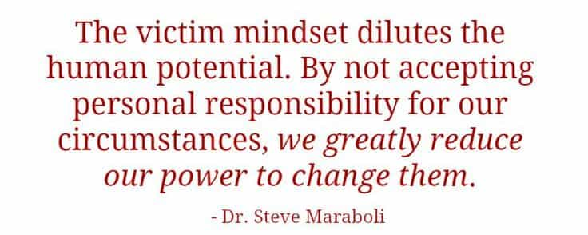

"You know, walk the earth, meet people... get into adventures."


Women being fat and men being short are the biggest laments of the dating scene today, and, while they are falsely rated as equivalent (a man cannot become taller, but a woman can certainly lose weight), there is an additional misdirection at play here. Women hold the belief that everything about their physical appearance is tied up in one quality: that of beauty, and it is both the only thing men want and the thing she cannot change about herself. Today we will talk on how beauty is not attractiveness, that which also is what men actually want in a woman.
We’re in a victim culture. You get a free pass to anything if you can claim you were victimized by it, and only when you want that free pass. The same woman can say about her weight “I’m sorry I’m not beautiful enough for you” (implying that you are a horrible person for daring to criticize her implied less-than-perfect finish in the genetic lottery) and “At least I have a pretty face,” (which attempts to minimize her obesity while not realizing the contradiction implied.

Said contradiction is, simply, that being obese has nothing to do with beauty, but a pretty face most certainly does. Beauty is the sum total of the things that your lifestyle cannot control; the structure and symmetry of your face, the quality of your hair and skin, and other things that come from your genetics. This is different from attractiveness, which is the aggregate collection of how appealing you are to the opposite sex, of which beauty is only a small part.
The easiest way to explain the difference is to “flip the script” (to abuse a SJW self-righteous term) and apply it to men. Here at Return Of Kings, we spend NO time on male beauty. There is not an article here on nose jobs or skin care, and I think the closest we come to such matters are some articles on shaving, beards, haircuts, and suits. “Be clean and smell decent,” is our advice on grooming, and we are, quite rightly, on to more important stuff because beauty, for a man, does not matter.
However, and here’s the kicker, it doesn’t matter much for a woman either. “WTF?” the collective voice of the comment section says right about now. Be at peace, my friends, and I shall explain all.
A woman’s beauty has very, very little to do with her attractiveness, and it’s the latter that men want to date. Let’s use a couple examples here.
Woman A has a beautiful face, of interest and symmetry, with deep blue eyes, hair of a nice natural luster, and clear skin. Woman B has a plain face, with eyes a little too close together, a couple moles, and her hair is drab and dry. She has a few acne scars.
Woman A got overweight in high school, she eats badly and has wrecked her complexion. She’s an atheist, a feminist, a socialist, a gay rights activist who would go gay for the right woman, and has no hobbies other than Netflix. Seeing no point in men, and expecting people to love her for who she is, she spends no time on her appearance, and showers, at the best, every few days. She leaves her apartment only to go to work, where she sits all day in front of a computer, and only sees the sun in between those places and her car. She had a cat, but neglected it until it died.
Woman B became an athlete in middle school and stayed that way. She learned good, healthy cooking from her mother, and alternates between it and healthy small salad-based meals for single people on the go. She loves her God, tries to love everyone as herself, believes in getting paid fairly for a good day’s work, is straight and still a virgin, and spends her spare time running, gardening, or pursuing an interest in painting. She’s a little insecure about her looks, so she tries to look her best whenever she leaves her small, neat home and is polite and courteous even to those that don’t deserve it. She’s picky about hygiene, and has to balance working her running in with being able to get cleaned up before her next thing on her busy schedule, but, if she has a few moments, she likes to read outside.
Which girl would you rather date? Which girl would ANY man rather date? Sure, Woman A natively had better looks, but they went to shit with her lifestyle, and she’s a worthless bitch on top of it. Woman B, while she may be a little plain, is the nicest, most religious girl you’ll ever meet, and has what we’re guessing is a smoking body under those prim work clothes from all that running.
Every positive trait Woman B has is something she chose to work towards, and the same can be said about all the negative traits possessed by Woman A. This leads us to the logical deduction of:
Women want to lump all of their shortcomings in with beauty because, that way, none of them are her fault; she’s just not lucky enough to be beautiful, and you’re shallow for not wanting her. Anything worthwhile on this earth requires effort, and it’s not the lack of native beauty, which men can and do excuse as it actually is genetic and not controllable, but, rather, it’s the lack of effort in being a good, healthy person of worth, manners, and values that turn men off.
Some girls go halfway and succeed at being physically attractive, but emotionally, intellectually, and morally still are the blubbery, lazy, unhygienic mess in their heads, and these are the ones that are put in the pump and dump or short term fling categories, but never marriage.
The large girl might turn into a better looking girl than her friends, if she’d work at it.
By taking all her faults, most of which are fixable, and saying that she is rejected because guys don’t find her beautiful is nothing more than a rationalization to avoid work combined with an indictment of men who are horrible shitlords for expecting her to attain perfection. If a guy wants her to be more beautiful, it’s on him, since he’s unreasonable, and so there is no expectation of her to clean up her life at least a little bit.
This logical escape hatch of beauty fixation actually works in reverse order for girls with guys. A woman bitches and moans when shit gets tough, a man gets to work and fixes it. ROK could be summed up with “This is what life will throw at you; here’s how to win;” if it’s a problem, we’ll make it work through effort and ingenuity.
But what if you figuratively fall short? What if she doesn’t like your shoes, or your car is old, or your haircut is out of style? Maybe she got bored on the date, or maybe she felt a little scared at one point and decided you were “rapey?” Can she criticize you to the world on any of those? No, of course she can’t, even SJWs know it’s shallow to reject a guy based on fashion, or material objects, and her girlfriends will just think she’s goofy if she goes mental about vibes. What to do? Oh, here we go, let’s just make him literally fall short as well.
They tell me the direct approach saves time.
A guy can’t fix being short; he’s always going to be at his adult height, and minus platform shoes or dangerous surgery, that’s it. A girl that rejects a guy based on height will always be safe from regret for rejecting him over something that he later fixes and then bags a hotter girl the next time around. Plus, even short, sub-five foot girls are wanting some six foot plus guys, so there’s no limit to what a girl can get away with in her preferences for the height of her dates.
If you happen to actually be a tall man (your author stands at 6′ 4″ in socks), don’t worry, they’ll either find something else, or, more likely, just ghost on you entirely.
Rolling fat (yuck) into beauty, along with all other controllable faults that are eliminated with effort absolves women of the necessity of fixing any issues affecting their attractiveness that their laziness caused, and rejecting men for being short removes the ability of men to fix any of theirs by focusing on the one thing they can’t change. However, this only works on men that don’t go for the next girl, so, if she says you’re short, or fake-apologizes for not being beautiful when she’s just lazy, move right along.
Read More: American Girls Are The Papa John’s Of Women